GLICD
L'état d'impression du document :
Debian et
Xfce.
Après avoir lancé une impression depuis une application, il est possible de connaître l'état de l'impression.
- En haut à droite du bureau apparaît l'icône imprimante :
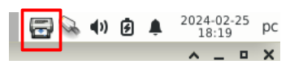
- Positionner le pointeur de la souris sur cette icône puis simple clic
Une fenêtre s'ouvre : « Etat d'impression du document (mes tâches) »
- Tâche : Numéro de la tâche d'impression, ici : « 11 »
- Documents : Le nom du document, ici : « Sans nom 1 »
- Imprimante : Le nom de l'imprimante, ici : « MEMO »
- Taille : La taille du fichier, ici : « 0k »
- Temps en file d'attente : Depuis combien de temps l'impression est en attente
Exemple : « il y a 5 minutes »
- Etat : L'état de l'impression, exemple : « En attente » ou « Traitement en cours »...
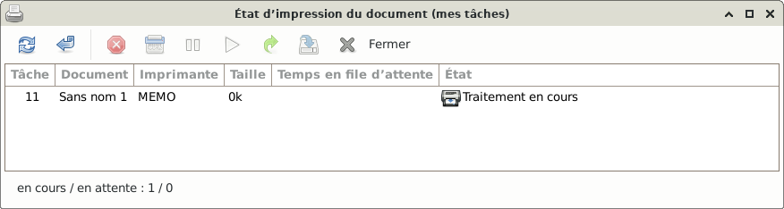
- Lorsque l'impression est finie, la fenêtre doit être vide
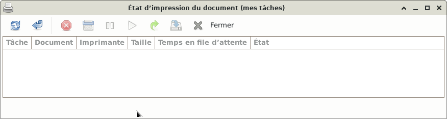
- Si l'impression ne s'est pas faite, elle reste alors « En traitement en cours » ou « En attente ».
il est possible à l'aide des icônes de :
- Rafraîchir la liste des tâches d'impression
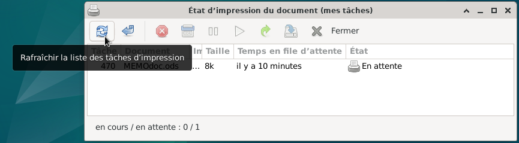
- Afficher les tâches d'impression terminées
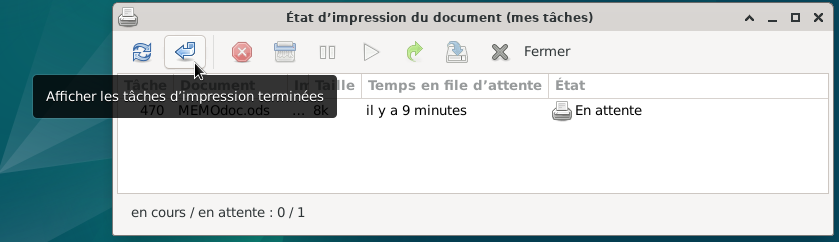
- Annuler les tâches d'impression sélectionées
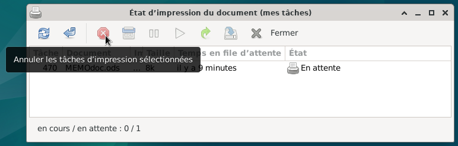
- Pour annuler une tâche, il faut la sélectionner :
Simple clic sur la tâche à annuler, elle est maintenant surlignée en bleu
Dans cet exemple le document : « Sans nom 1 »
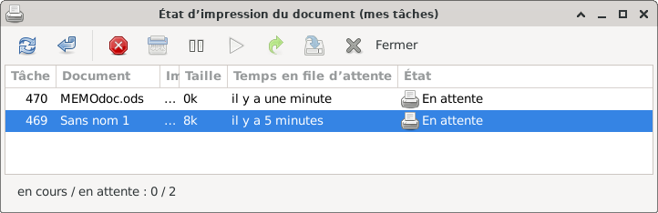
- Simple clic > Annuler les tâches d'impression sélectionées
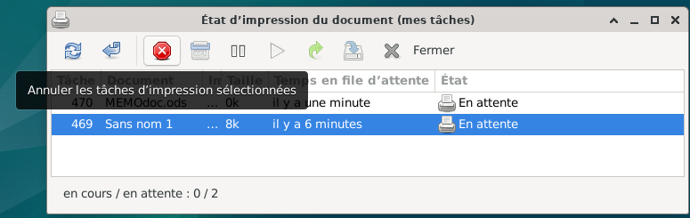
- Une fenêtre apparaît « Voulez-vous vraiment annuler cette tâche »
Simple clic > « Annuler la tâche »
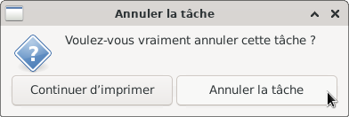
- La tâche a été annulée
- De la même façon que d'annuler une tâche d'impression, il est possible de la supprimer.
Sélectionner la tâche
Simple clic > « Supprimer les tâches d'impression sélectionnées »
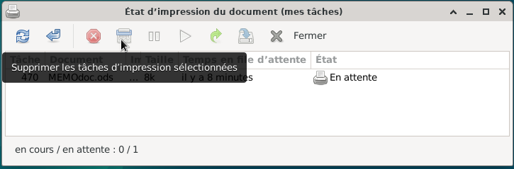
- Suspendre les tâches d'impression sélectionnées
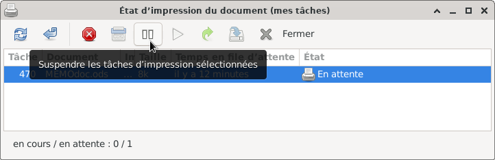
- Reprendre les tâches d'impression sélectionnées
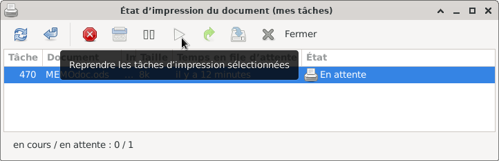
- Imprimer à nouveau les tâches d'impression sélectionnées
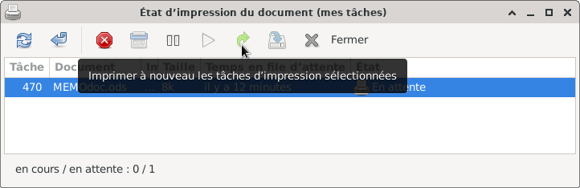
- Relancer les tâches d'impression sélectionnées
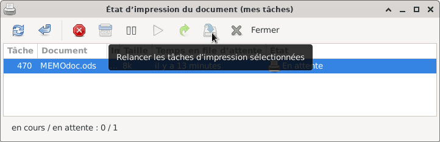
- Fermer cette fenêtre simple clic > Fermer
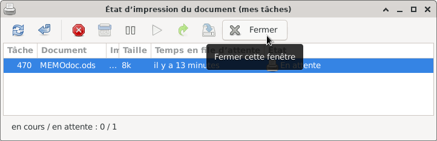

Retour
Informations sur le logiciel libre et
Merci.
Marques déposées :
Ce site ne fait pas partie de Debian, n'est pas produit par le projet
Debian, ni approuvé par le projet Debian.
Ce site n'est pas affilié à Debian. Debian est une marque déposée appartenant
à Software in the Public Interest, Inc.
Contribuer :
Ce site ne fait pas partie de XFCE, n'est pas produit par le projet
XFCE, ni approuvé par le projet XFCE.
Ce site n'est pas affilié à XFCE.
Ce site est juste réalisé par un passionné.